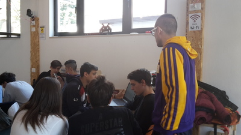

Il 4 marzo la nostra classe si è recata presso l’ Università di Reggio Emilia per partecipare all'ottava attività riguardante alternanza scuola-lavoro.
In questa giornata siamo
andati all'università dove ci hanno inizialmente spiegato cosa sono gli Open Data e come vengono utilizzati nella società. Con open data si intendono i dati che vengono messi a disposizione di tutti.

Siamo stati poi suddivisi in diversi gruppi con un obbiettivo ciascuno, quello del mio gruppo riguardava il miglioramento dei difetti di ogni città. Noi abbiamo scelto di analizzare i punti critici. Con “Punti critici” intendo i punti in cui si verificano maggiormente furti, rapine e borseggi. Il nostro gruppo ha creato un'App,
in via ipotetica, per il turismo che visualizzava i punti critici nelle città turistiche.